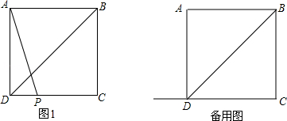

2015年北京市中考数学试题 · 数学解答题 第28题
28．（7分）（2015•北京）在正方形ABCD中，BD是一条对角线，点P在射线CD上（与点C、D不重合），连接AP，平移△ADP，使点D移动到点C，得到△BCQ，过点Q作QH⊥BD于H，连接AH，PH．
（1）若点P在线段CD上，如图1．
①依题意补全图1；
②判断AH与PH的数量关系与位置关系并加以证明；
（2）若点P在线段CD的延长线上，且∠AHQ=152°，正方形ABCD的边长为1，请写出求DP长的思路．（可以不写出计算结果）
